Dalla vendita al margine di commessa, per software house che lavorano con team misti e strumenti AI.
Odoo 18.0 Community · una sola app · nessuna modifica al core né ai moduli OCA
Indice: Video · 1. Esigenze · 2. Funzionalità · 3. Guida passo-passo · 4. Processi BPMN · 5. Ruoli · 6. Dati sintetici · 7. Installazione · 8. Note tecniche
Analisi funzionale e tecnica (per i tecnici)
Il video mostra l'app in uso con gli utenti demo di quattro ruoli (Commerciale, Project Manager, Analista, Amministrazione): un ordine nuovo diventa una commessa, il PM pianifica, l'analista consuntiva, scatta l'alert e si leggono costi e margini. Didascalie in italiano, nessun audio.
Capitoli (il minuto apre il video da quel punto)
Settore. Una software house o società di consulenza IT che vende progetti a corpo, pacchetti di ore prepagati, attività a consuntivo (T&M) e canoni mensili di assistenza (AMS). Il team è misto: Project Manager, analisti funzionali e supporto sono dipendenti; gli sviluppatori sono consulenti esterni che fatturano all'azienda a giornata. Tutti lavorano con strumenti AI (Claude Team, Claude Code, API Anthropic).
Obiettivo. Sapere in ogni momento quanto costa e quanto rende ogni commessa, senza appesantire chi segna le ore. Odoo 18 Community copre vendite, progetti, fogli ore e contabilità, ma non la pianificazione delle persone (modulo Enterprise), né tre aspetti propri di questo modello di lavoro: il lavoro in parallelo su più commesse grazie all'AI, il costo dei consulenti che arriva solo con la loro fattura e il costo degli strumenti AI.
Problemi da risolvere. Se una persona segna 12 ore in una giornata da 8 lavorando in parallelo, il costo non deve raddoppiare. Le fatture dei consulenti e i consumi AI dedicati vanno ribaltati al cliente solo sui contratti T&M, con un ricarico. Le licenze AI vanno distribuite sulle commesse senza chiedere a nessuno di tracciare i prompt. Il monte ore venduto va sorvegliato prima che si esaurisca, e ogni ora scalata deve dire su quale task è stata spesa.
Priorità e vincoli. Tutto in un'unica app installabile anche in un altro Odoo 18 CE; nessuna modifica al core né ai moduli OCA; nessuna burocrazia aggiuntiva nei fogli ore; ambiente demo funzionante senza credenziali esterne.
Le schermate sono d'esempio: i riquadri numerati corrispondono alle voci sotto ogni figura.
Quando il Commerciale conferma un ordine di servizi, Odoo crea una commessa visibile solo agli invitati, con le ore vendute e 4 task già stimati (Analisi 15%, PM 10%, Sviluppo 60%, Test 15%). Ogni ora segnata aggiorna il consumo: al 75% compare un avviso giallo, al 90% rosso; la prima volta che si supera una soglia, PM e venditore ricevono un messaggio e un'attività. Nei canoni AMS il consumo è calcolato sul mese corrente e il Supporto segue la commessa in automatico.
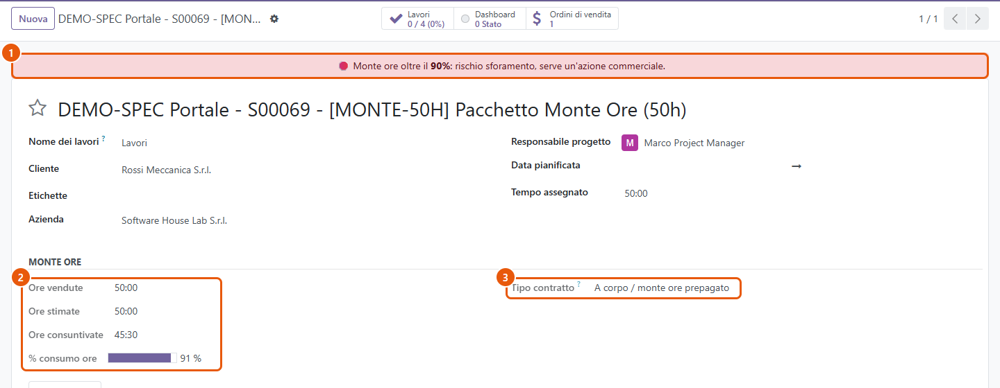
Figura 1 – Scheda commessa a corpo. 1. Avviso rosso: monte ore oltre il 90%. 2. Gruppo Monte ore: ore vendute, stimate, consuntivate e percentuale di consumo. 3. Tipo contratto, ricavato dal prodotto venduto: decide se costi esterni e spese si ribaltano al cliente (solo T&M).
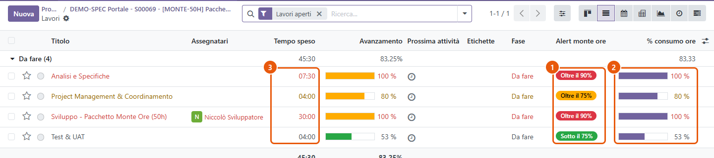
Figura 2 – Task della commessa. 1. Alert monte ore per task, sulle ore stimate del task. 2. Barra di consumo. 3. Ore consuntivate dai fogli ore e dai turni confermati.
Il PM pianifica turni (persona, giorno, task, ore) e li pubblica; la persona li conferma a fine giornata, eventualmente correggendo le ore, e Odoo crea la riga del foglio ore. Ogni persona può avere al massimo 32 h a settimana (80% di 40 h) moltiplicate per il suo fattore parallelo: 1,0 per chi segue un progetto alla volta, 1,5 per un senior che con Claude Code segue più commesse. Il PM può correggere il fattore per una singola settimana. Oltre il limite il turno non si salva.
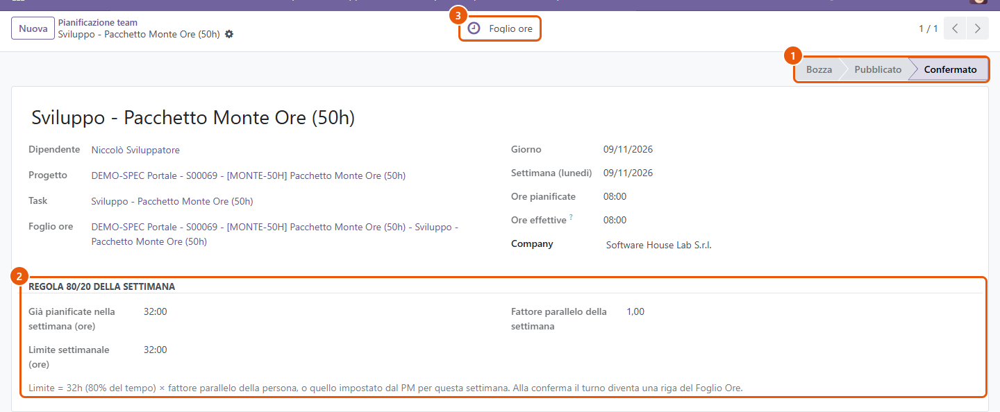
Figura 3 – Turno confermato. 1. Stato: bozza → pubblicato → confermato. 2. Riquadro Regola 80/20 della settimana: ore già pianificate, limite reale e fattore usato. 3. Pulsante Foglio ore.
Se una persona segna in un giorno più ore del suo calendario, le ore restano tutte e si fatturano tutte, ma il costo della giornata si divide tra le commesse (6 h + 6 h in una giornata da 8 h valgono 8 h di costo). Le righe di quel giorno diventano da approvare: sui contratti T&M entrano in fattura solo dopo l'approvazione del PM.
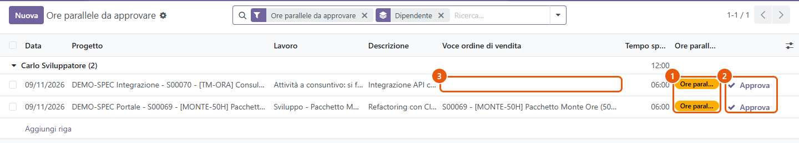
Figura 4 – Ore parallele da approvare. 1. Stato Ore parallele da approvare. 2. Pulsante Approva, riservato al PM. 3. Le ore dei consulenti esterni sui T&M non hanno voce d'ordine: si fatturano tramite la loro fattura (2.4).
Per un consulente esterno la scheda persona indica il fornitore che fattura e la tariffa concordata. Le sue ore non hanno un costo da dipendente: finché la fattura non arriva, la commessa vede un costo maturato (ore × tariffa). Quando l'Amministrazione conferma la fattura fornitore indicando il consulente, Odoo collega le ore e mostra lo scostamento. Se la commessa è T&M, la riga della fattura si aggiunge all'ordine del cliente al costo + ricarico (15% predefinito, modificabile per commessa). Sulle commesse a corpo e sui canoni resta solo un costo.
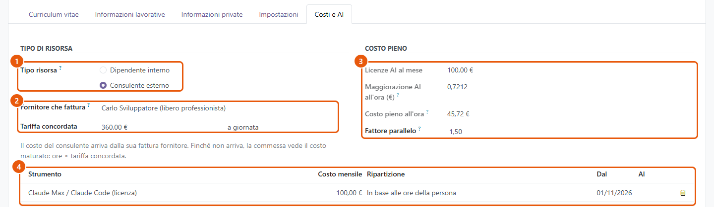
Figura 5 – Scheda persona, Costi e AI. 1. Tipo risorsa: dipendente o consulente esterno. 2. Fornitore e tariffa concordata. 3. Costo pieno: licenze AI, maggiorazione AI all'ora, fattore parallelo. 4. Licenze AI assegnate.
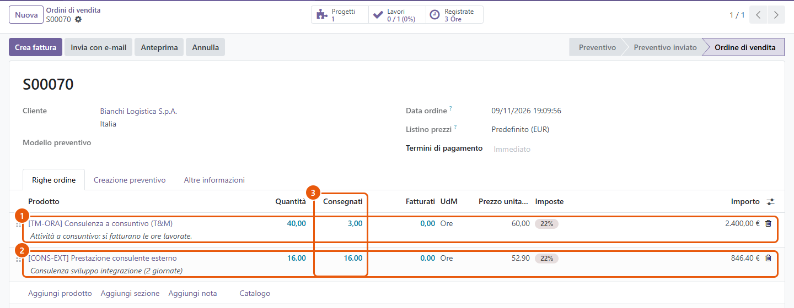
Figura 6 – Ordine T&M con la fattura del consulente ribaltata. 1. Riga T&M a ore: si consegnano solo le ore interne. 2. Riga aggiunta dalla fattura del consulente, al costo + ricarico. 3. Consegnati: la quantità che andrà in fattura.
Le licenze AI a canone si assegnano alle persone; i consumi a pagamento (API, Claude Code) si registrano a mano, da CSV o, se configurato, dall'API costi di Anthropic. Una tabella di corrispondenze decide dove va ogni consumo: un workspace o una chiave dedicati vanno sulla loro commessa, il consumo di una persona si divide sulle sue ore del mese, il resto va nei costi generali. Ogni notte Odoo ripartisce il mese aperto; a fine mese l'Amministrazione lo chiude e i consumi dedicati alle commesse T&M diventano spese vive sull'ordine del cliente.
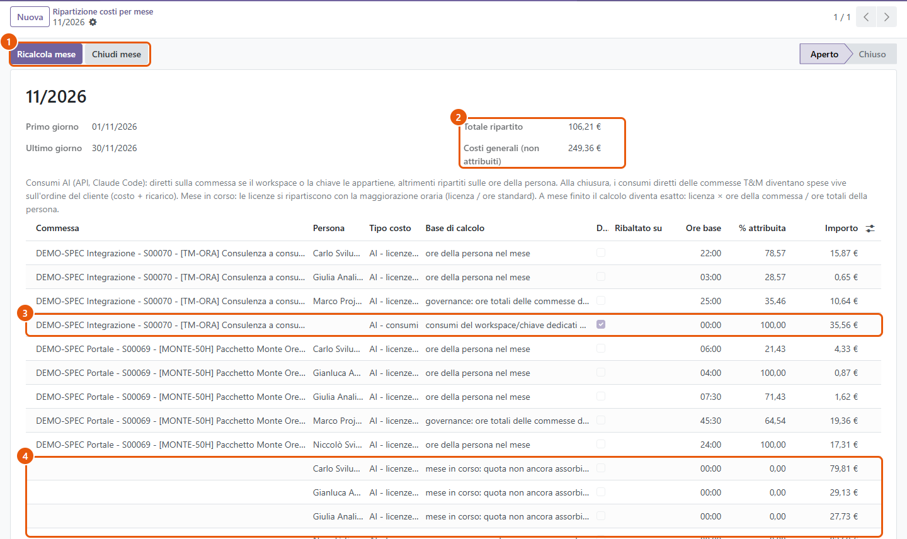
Figura 7 – Ripartizione del mese. 1. Ricalcola mese e Chiudi mese (Amministrazione, a mese finito). 2. Totale ripartito e costi generali. 3. Consumo API dedicato alla commessa T&M, da ribaltare. 4. Mese in corso: la licenza non ancora assorbita dalle ore resta nei costi generali.
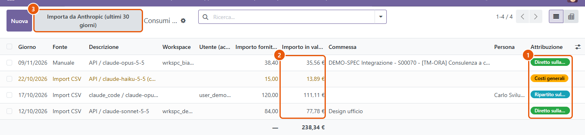
Figura 8 – Consumi AI. 1. Attribuzione: diretto, ripartito sulla persona, costi generali. 2. Importo convertito in euro. 3. Importa da Anthropic: connettore facoltativo, spento senza chiave.
Il report mette a confronto i ricavi (venduto, e per i T&M le ore consegnate per il prezzo, più quanto ribaltato al cliente) con i costi divisi per natura: lavoro interno, AI, consulenti esterni, altri fornitori. Mostra anche il margine senza pass-through e le ore risparmiate rispetto alla stima.
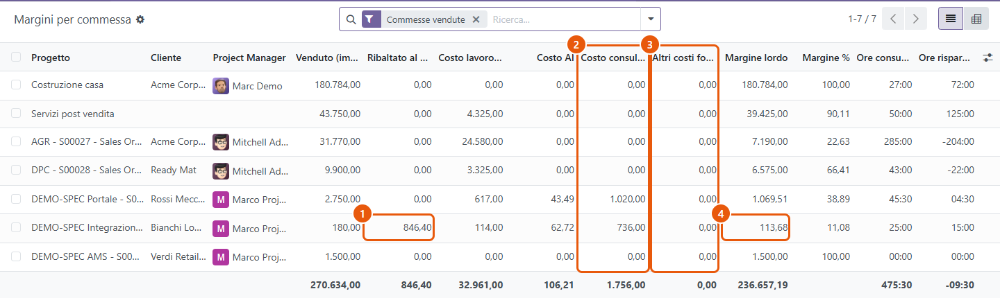
Figura 9 – Margini per commessa. 1. Ribaltato al cliente, al netto dello sconto di riga. 2. Costo consulenti esterni (fatture + maturato). 3. Altri costi fornitori. 4. Margine lordo.
Ogni foglio ore porta il task e la riga dell'ordine (il pacchetto): le ore scalate sono sempre riconducibili a un'attività. Sulle commesse vendute a ore (monte ore e T&M) un foglio ore senza task non si salva; sui canoni AMS resta facoltativo. Il progetto ha la scheda Costi, ricavi e margine (PM e Amministrazione), con gli stessi numeri del report; ogni pacchetto mostra ore vendute, scalate e residue, e il pulsante Ore per task apre il dettaglio.
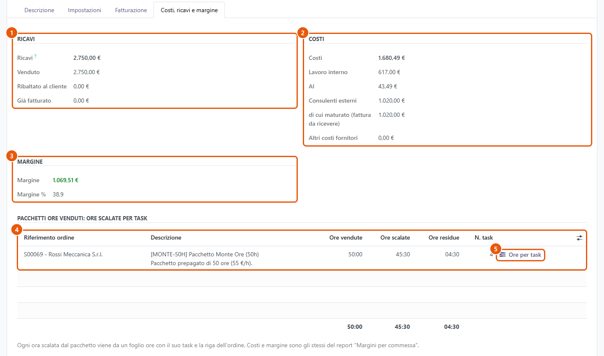
Figura 10 – Scheda Costi, ricavi e margine. 1. Ricavi. 2. Costi. 3. Margine. 4. Pacchetti venduti con ore scalate e residue (rosso se sforato). 5. Ore per task.
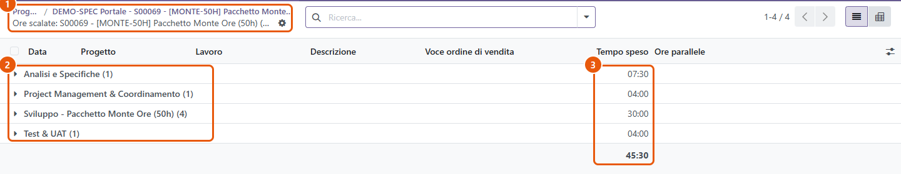
Figura 11 – Ore scalate dal pacchetto, raggruppate per task. 1. Il pacchetto. 2. Un gruppo per task, con le singole registrazioni. 3. Ore per task e totale.
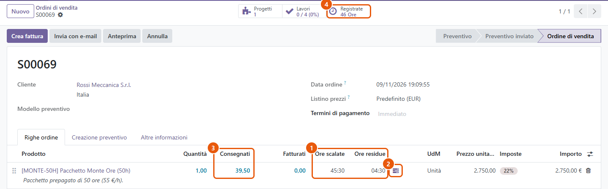
Figura 12 – Riga d'ordine del pacchetto. 1. Ore scalate e residue. 2. Dettaglio per task. 3. Consegnati: esclude le ore parallele non ancora approvate. 4. Totale ore registrate sull'ordine.
I passaggi seguono il flusso del video. Per ogni passo: chi lo fa, dove si trova in Odoo e cosa succede dopo.
| # | Chi | Dove | Cosa fare | Risultato |
|---|---|---|---|---|
| 1 | Commerciale / PM | Vendite › Prodotti | Sui servizi indicare Ore per unità (pacchetti e corpo), Ore mensili incluse (canoni) e, se serve, Crea task di gestione interna. I prodotti di base sono già pronti. | Ore vendute calcolate da sole sugli ordini |
| 2 | PM | Progetti › Configurazione › Task di default commessa | Rivedere i task standard e le percentuali (totale sotto il 100%: il resto va allo Sviluppo). | Stime dei task delle nuove commesse |
| 3 | Amministrazione (o HR) | Dipendenti › scheda persona › Costi e AI | Tipo risorsa (dipendente o consulente esterno), fornitore e tariffa dei consulenti, fattore parallelo, licenze AI. | Costi corretti per persona e limite 80/20 personale |
| 4 | Amministrazione | Pianificazione › Costi e AI › Strumenti AI, Licenze AI, Corrispondenze consumi | Catalogo degli strumenti, licenze per persona, collegamento di workspace, chiavi e utenti del fornitore alle commesse o alle persone. | Costi AI attribuibili alle commesse |
| 5 | Amministratore di sistema | Impostazioni › Tecnico › Parametri di sistema | Facoltativo: ore settimanali (max_weekly_hours, 32), ricarico (passthrough_markup_pct, 15), chiave Anthropic. | Regole adattate all'azienda |
| # | Chi | Dove | Cosa fare | Risultato |
|---|---|---|---|---|
| 1 | Commerciale | Vendite › Ordini › Preventivi › Nuovo | Cliente, poi Aggiungi prodotto (es. Pacchetto Monte Ore 50h). | Preventivo in bozza |
| 2 | Commerciale | Pulsante Conferma | Conferma dell'ordine. | Commessa riservata agli invitati, ore vendute, 4 task stimati; per i canoni anche abbonamento mensile e Supporto tra i follower |
| 3 | PM | Progetti › commessa | Controllare il gruppo Monte ore e il Tipo contratto; sui T&M scegliere il ricarico pass-through; assegnare i task. | Commessa pronta da pianificare |
| # | Chi | Dove | Cosa fare | Risultato |
|---|---|---|---|---|
| 1 | PM | Pianificazione › Pianificazione team › Nuovo | Dipendente, progetto, task, giorno, ore pianificate; Salva. | Turno in bozza; oltre il limite 80/20 Odoo blocca il salvataggio |
| 2 | PM | Pianificazione › Fattore parallelo per settimana | Facoltativo: alzare o abbassare il fattore di una persona per una settimana (es. formazione). | Limite settimanale corretto |
| 3 | PM | Turno › Pubblica al dipendente | Pubblicazione del turno. | La persona vede il turno e riceve un messaggio |
| 4 | Analista / Sviluppatore / Supporto | Pianificazione › I miei turni | A fine giornata correggere le Ore effettive se diverse e premere Conferma turno e crea foglio ore. | Riga del foglio ore con commessa e task (pulsante Foglio ore) |
| 5 | Analista / Sviluppatore / Supporto | Fogli ore › Fogli ore › I miei fogli ore | Per le attività non pianificate: registrare le ore indicando sempre il task (obbligatorio su corpo e T&M). | Ore scalate dal pacchetto, consumo e alert aggiornati |
| # | Chi | Dove | Cosa fare | Risultato |
|---|---|---|---|---|
| 1 | PM, Commerciale | Attività e messaggi su progetto e ordine | Al primo superamento del 75% o del 90% arriva un'attività di avviso: valutare con il cliente un'estensione. | Etichette gialle o rosse su commessa e task |
| 2 | PM | Pianificazione › Ore parallele da approvare | Verificare le giornate oltre il calendario e premere Approva. | Sui T&M le ore entrano nel consegnato e quindi in fattura |
| 3 | PM | Commessa › scheda Costi, ricavi e margine › Ore per task | Leggere ricavi, costi, margine e ore scalate di ogni pacchetto. | Dettaglio delle ore per attività |
| # | Chi | Dove | Cosa fare | Risultato |
|---|---|---|---|---|
| 1 | Amministrazione | Contabilità › Fornitori › Fatture › Nuovo | Fattura del consulente: prodotto Prestazione consulente esterno, campo Consulente sulla riga, distribuzione analitica sulla commessa; Conferma. | Ore del consulente collegate, scostamento fattura/ore; se T&M, riga sull'ordine del cliente al costo + ricarico |
| 2 | Amministrazione | Pianificazione › Costi e AI › Consumi AI | Inserire i consumi a mano, importarli da CSV o con Importa da Anthropic (se configurato). | Ogni consumo attribuito: diretto, per persona o costi generali |
| 3 | PM / Amministrazione | Pianificazione › Costi e AI › Ripartizione per mese | Durante il mese: Ricalcola mese (lo fa anche il cron ogni notte). | Costi AI provvisori sulle commesse |
| 4 | Amministrazione | Stesso menu, a mese finito | Chiudi mese (oppure Riapri, se le spese vive non sono ancora state fatturate). | Ripartizione definitiva; consumi diretti dei T&M come spese vive sull'ordine |
| 5 | Commerciale | Vendite › Ordini › Ordini › ordine › Crea fattura | Preparare la fattura al cliente. | Fattura in bozza (il Commerciale non può registrarla) |
| 6 | Amministrazione | Contabilità › Clienti › Fatture | Controllare e premere Conferma. | Fattura registrata; il fatturato entra nel report margini |
| 7 | PM, Amministrazione | Progetti › Rendicontazione › Margini per commessa | Confrontare le commesse (lista o pivot). | Margine lordo, margine senza pass-through, ore risparmiate |
Corsie (lane) per ruolo, eventi di inizio e fine, attività e gateway esclusivi per le decisioni. I diagrammi rappresentano solo ciò che l'app fa oggi.
PROC-001/002/003 – Dall'ordine al foglio ore
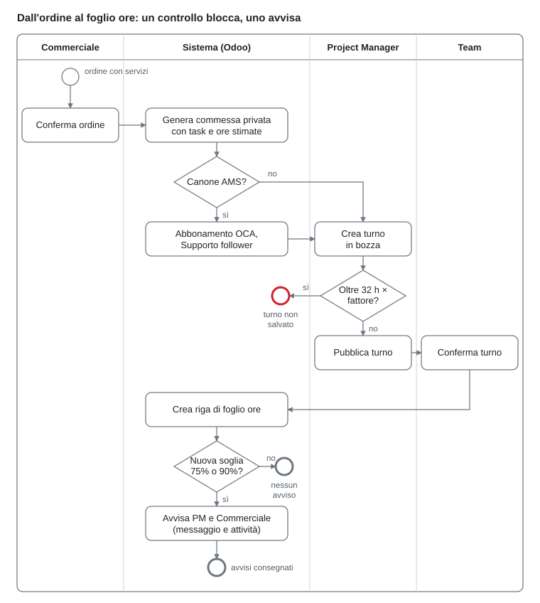
PROC-004/005 – Lavoro in parallelo e fatturazione
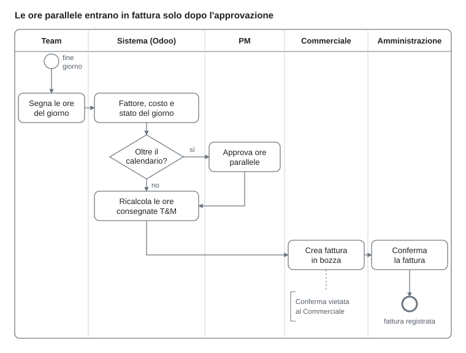
PROC-006 – Consulente esterno e ribaltamento
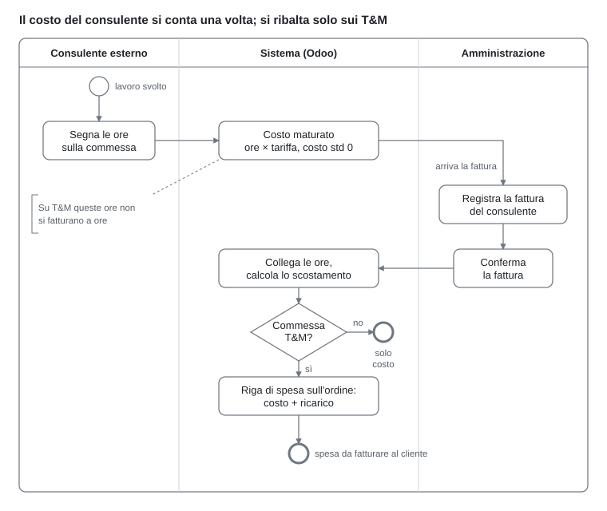
PROC-007 – Chiusura mensile dei costi AI
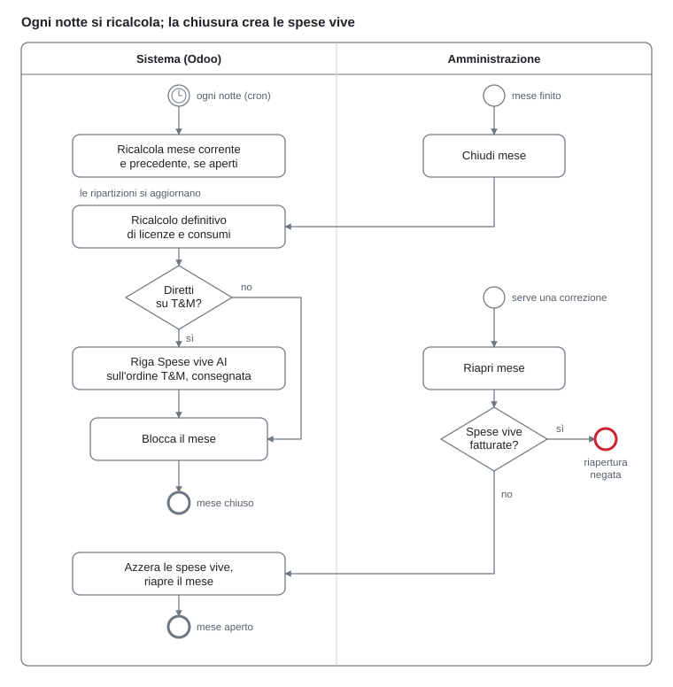
| Ruolo (gruppo dell'app) | Cosa fa |
|---|---|
| Commerciale | Opportunità, preventivi, ordini, fatture in bozza (non le conferma) |
| Project Manager | Progetti, stime dei task, turni, alert, approvazione ore parallele, fattore parallelo, ricarico pass-through, margini |
| Analista funzionale / Sviluppatore | Conferma dei turni, fogli ore con task, task assegnati |
| Supporto | Ticket e fogli ore sulle commesse a canone (AMS) |
| Amministrazione | Conferma fatture, fatture dei consulenti, schede persona e tariffe dei consulenti (app Dipendenti), licenze e consumi AI, chiusura del mese |
Con i dati demo attivi (o su richiesta con env["lab.demo.data"]._lab_load_synthetic()) l'app carica uno scenario coerente, con date relative a oggi. Non viene mai caricato in un database di produzione senza dati demo.
| Cliente / area | Cosa permette di verificare |
|---|---|
| Rossi Meccanica – monte ore 50 h | Alert giallo all'80%, ore per task, fattura anticipata, consulente Niccolò fatturato (solo costo, contratto a corpo) |
| Bianchi Logistica – T&M | Fattura di Carlo ribaltata con ricarico, spese vive AI del mese chiuso, ore parallele approvate e da approvare, fattura al cliente |
| Verdi Retail – canone AMS | Ticket del Supporto, consumo sul mese corrente, abbonamento OCA |
| Neri Assicurazioni – sviluppo a corpo 120 h | Task di analisi oltre il 90%, ore del consulente maturate in attesa di fattura, da fatturare |
| CRM | Tre opportunità in fasi diverse e un preventivo AMS in bozza |
| Pianificazione | Niccolò a 32 h (limite pieno), Carlo con fattore 1,5, fattore ridotto per la settimana prossima, turni confermati che diventano fogli ore |
| Costi AI | Licenze del team, consumi diretti / per persona / costi generali, mese scorso chiuso e mese in corso aperto |
subscription_oca (canoni) e project_timeline (con web_timeline).scripts/package_app.sh crea uno zip con l'app e i moduli OCA; copiare le cartelle nell'addons path e installare Flusso Operativo Software House.lab_workflow_custom.anthropic_admin_key.| Area | Modelli e punti di estensione |
|---|---|
| Vendita → commessa | sale.order.line (lab_sold_hours, ore scalate/residue, _timesheet_create_project), lab.default.task |
| Monte ore e alert | project.project / project.task (lab_alert_level, _lab_check_hours_alert) |
| Pianificazione | lab.planning.slot, lab.planning.capacity, parametro max_weekly_hours |
| Fogli ore | account.analytic.line: _lab_recompute_days (ore parallele), costo maturato dei consulenti, task obbligatorio |
| Consulenti e pass-through | account.move.line (lab_consultant_id, _sale_determine_order solo T&M, ricarico) |
| Costi AI | lab.ai.tool, lab.ai.license, lab.ai.usage, lab.ai.mapping, lab.cost.period, lab.cost.allocation |
| Margini | lab.margin.report (vista SQL, unica fonte dei margini, letta anche dalla scheda del progetto) |
| Dati sintetici | lab.demo.data._lab_load_synthetic (idempotente) |
Prossimo sviluppo proposto (fase 3, non implementato). Ripartire i consumi AI personali anche in base ai commit Git collegati ai task (codice del task nel messaggio di commit), con base di ripartizione scelta dall'Amministrazione.
Analisi funzionale e tecnica completa (requisiti con tracciabilità su codice e test, modello dati, formule di calcolo, punti di estensione, sicurezza, automazioni, integrazione, limiti noti): apri l'analisi funzionale e tecnica.
Il video si rigenera con scripts/registra_video.sh dopo ogni modifica all'app: crea e poi ripulisce un ordine di prova per il cliente Ferri Automazione S.r.l..